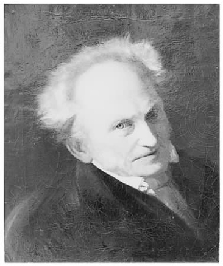
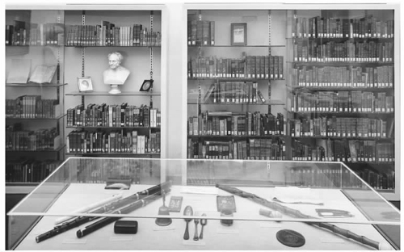

审美体验这一节故意完全改变了叔本华著作的总体倾向，因为主体的意志在此避而未谈。只要我们还在运用意志，或者为意志所控制，我们在认识一个事物时就会不得不考虑它与其他事物以及与我们的一系列关系，比如：我们需要吗？我们用得上吗？它比别的好吗？它是如何变成现在这个样子的？它能作什么用？正如我们的智性是用来服务于意志的器官一样，我们用来认识客体的所有惯常关系都是受意志控制：我们感知事物是为了控制事物，为了生存。只有当我们完全停止使用意志，客体才能摆脱时﹑空、因、果等关系的束缚而浮现在我们的意识中。
叔本华对审美体验的认识属于一种传统，即认为审美体验就是对客体持有一种“无利害关系”的态度，因此他也常被引用作为这种观点的主要支持者之一。该观点主张，要想从美学角度体验某个事物，必须抑制或抛开所有的欲望，不去考虑会产生什么结果，满足什么需要或利益，只关注事物在感知中自我表现的方式。在叔本华看来，审美体验肯定会永远是任何人一生中最不平凡的一段经历，因为他说过意志是我们的本质，我们“考虑事物的平常方式”无不渗透着意志：
介绍作为表象的世界的第一本书轻松而又拘谨，我们步入作为意志的世界时初识消沉，第三本《作为意志和表象的世界》则带有光明和欢快的特征，这证实了美学对作者的重要性。
叔本华深刻地阐述了美学的核心问题：“如何在不涉及我们意志行为的情况下从客体身上体会到满足和快乐。”（《附录与补遗》第二卷，415）（他对美的愉悦的看法在某些方面类似于康德在《判断力批判》中提出的观点，尽管叔本华对这种联系不以为然，而且他也不认为康德的美学论著是他最好的著作。）按照常理，愉悦和满足来自某种欲望或目标的实现。我们所谓的幸福通常是在我们的一个目的得到实现后感受到的，或者可能是暂时还没有新的奋斗目标。但是这种愉悦和幸福，既然它们离不开意志行为，就永远带有痛苦的可能。首先，一切意志行为皆“源于缺乏，源于不足，所以也就是源于痛苦”（《作》第一卷，196）。其次，当任何一种欲望得到满足后，意志行为的主体很快会面临新的不足。因此在意志的驱使下人只能在痛苦和满足之间摆动，而且叔本华相信，痛苦持续时间更长，而满足只是暂时回到中间状态，然后又感到缺乏。

图8 叔本华：朱利叶斯·哈梅尔创作的肖像，1856年
美学的问题就在于除了这种摇摆中的愉悦，如何还可能存在其他的愉悦。如果我们把愉悦定义为补充缺乏或满足欲望，那么完全无意志的沉思状态应该就毫无快乐可言了。显然，身处这种状态的好处是不会再有痛苦的可能，叔本华对此非常清楚。然而无意志状态怎么可能让位于真正的愉悦呢？有时候，叔本华笔下也表明这似乎不可能，似乎美学沉思是一种纯知识状态，一种对客观现实的冷静记录——“我们步入了另一个世界，可以这么说，在那里任何动摇我们意志，因此也让我们深深不安的东西，不复存在……幸福与不幸都消失了”（《作》第一卷，197）。但是他同时又用“安宁”、“幸福”等字眼来描述审美体验，认为是一种特殊的快乐或愉悦。他甚至还说：当“所有痛苦的可能全部消除……这种感知的纯粹客观状态就变得能让我们感到极其快乐”（《作》第二卷，368）。我们可以把这两种不同的说法加以调和，主张通常意义上的幸福或不幸取决于意志行为，但美学上的幸福则取决于意志行为的中止。
也许有人会认为，这就足以给审美体验赋予叔本华希望赋予的价值。然而，他对“审美态度”理论的看法却非比寻常，他要将无意志的沉思状态同获取最客观的那种知识联系起来。对他而言，没有主观欲望和目的的体验对世界的歪曲程度最轻，因此他可以认为审美体验之所以重要，不仅在于这种体验逃避个人自身意志的镇静作用，还因为唯有它能呈现事物永恒的面貌。换句话说，审美体验具有很高的认知价值，而不仅仅是进入到某种心理状态所产生的使人充实的作用或治疗作用。
主体通常会体验位于时空中的物质客体、客体之间的因果联系，以及在动机影响下出现的意志的身体活动。但是叔本华相信，我们可以在某些特殊时刻进入到一种不被个体所分割的永恒现实。在个体事物和个体事件范围之外存在一种理念，“理念没有复数，也不会改变”：“理念表现自身的个体不可胜数，它们不断地出现，不断地消失，而理念却始终唯一不变，充足理由律也对它毫无意义。”（《作》第一卷，169）
叔本华在他第三本书开篇就论述了柏拉图的理念以及它们与物自体之间的联系。他的观点可以归结为，艺术家，以及所有从事审美体验工作的人，都会发现理念的永恒现实，尽管这种发现转瞬即逝。因此，他应该首先向我们说明这个形而上的问题：这些理念到底是什么？他把它们称做物自体“最充分的客观现实”。这听起来有点模糊，但事实上却是一个很简单的概念。物自体不可知，但是一个可知的客体以最低限度的主观歪曲将现实呈现给主体，那就是物自体的“充分客观性”。叔本华是这样解释的：
这显然有点牵强，因为理念似乎必须既用做物自体，又用做表象，而这两者一开始就应该是互不相容的两个范畴。而且，虽然叔本华认识到将康德和柏拉图对等起来“在严格意义上”是错误的，但他仍然说出这句极其含糊的话：“两人学说的内在含义完全相同。”（《作》第一卷，172）一些评论家认为理念的说法是不恰当的、草率的事后补充。然而，这种评价并不完全公平，因为叔本华的理念说早在其理论系统形成之初就已出现，他在第二卷中论述自然中意志的客观化时就曾提到。我们应该坚持这样一种观点：自然不仅包含各种各样的个体事物和事件，同样也包含它们所属的、不变的单一事物和事件。自然界不仅有很多匹马，还有马这个物种；不仅有水池和喷泉，还有可重复的水分子H2 O结构；不仅有很多在不同时间﹑不同地点落到地面的物体，还有无处不在的地心引力。叔本华把后者看做永恒的理念，把我们对它们的理解看做世界上我们所能获得的最客观的知识。叔本华同柏拉图一样，认为理念存在于现实中，不依赖主体。它们不是概念。概念是我们为了把握一般现实而完成的精神构建；而理念是有待我们发现的自然的组成部分。在叔本华看来，理念甚至不能靠概念思考来发现，只能靠感知和想象。
那理念本身的意识会是什么样的呢？叔本华的回答令人瞩目。一旦我们放弃充分理由律的指导，
叔本华继续说道：“一下子”，这个特定的事物“成为了它那个种类的理念”，感知个体“成为了纯粹的认知主体” （《作》第一卷，179）。叔本华肯定是想说，我把这个特定事物看做一个普遍理念的化身，暂时失去了个体自我意识。他认为只要人还意识到自己作为个体区别于所思考的客体，就不可能认知理念［“只有当我们不再意识到自己属于这个世界，我们才能纯客观地理解这个世界”（《作》第二卷，368）］——反之，一旦人的沉思将人转变为现实的“纯粹的镜子”，他就不可能不认知理念。
尽管叔本华清楚地知道自然美（看看树、石块、岩石等例子）通常会引发审美体验，但他最关注的还是艺术。就他的时代而言他很正统，因为他相信创造艺术需要天才，而天才必须与一般的才气区别开来。但是他的确对天才进行了解释。他写道，天才就是“认知能力获得了远远超出服务意志 所需的极大的拓展”（《作》第二卷，377）。具有天才的人智性占三分之二，意志占三分之一，而“普通人”则相反。这并不是说天才缺乏意志——比如这样的人通常感情强烈，而是说他们的智性能更大程度地摆脱意志的影响，具有自主发挥作用的能力。
天才代表某个非人格化的事物，这在叔本华使用“世界的明眼”这一比喻时就有所暗示。天才不只是一个个体，“同时也是属于整个人类的一个纯粹的智性”（《作》第二卷，390）。天才放弃了在这个特殊个体中体现自我的意志，让智性脱离意志自由飞翔，它具有“从特殊中看出普遍”（《作》第二卷，379）的非凡才能。这是一种强化了的感知能力 ，这一点很重要。一个伟大的画家或雕刻家观察事物时总是更加深刻，更加细致，并且具备更强的能力将所看到的保留下来或进行再创造。但是仅仅感知自己身边的东西还不够，“为了愉快地完成、安置、放大、修复、保留和重复生活中一切有意义的画面，还需要想象力” （《作》第二卷，379）。因此，无论在哪种艺术形式中，天才都会胜过实际经验：一件伟大的艺术作品，如果它描绘的画面是经过提升的，就会更好地反映现实，与普通经验本身相比，包含的意义会更清晰、更明确。
天才真正的特长在于富有想象力的感知，而不是概念性的思考。相比之下，按照某种命题制造出来或是建立在完全理性设计上的艺术是没有生气的，毫无趣味可言。举个例子，当图片艺术变成一种象征性的寓言形式，只能通过用一个代码来辨认图象才能理解，那它在叔本华看来（《作》第一卷，239）就不是真正的艺术了。再举个例子，有些“模仿者”或“风格家”，看到某个程式在其他作品中运用成功，就亦步亦趋地制造。其结果让人不快：事先的刻意总能让人察觉，他们精心合成的那些组成要素总能“被人从混合物中挑出来，分离出来”。概念，“尽管在生活中很实用，在科学中很适用、有必要、富有成效，但在艺术上却永远是贫乏的，无效的”（《作》第一卷，235）。
天才人物很稀少，因为他们在一定意义上说是不正常的。对绝大部分人而言，运用智性是为了实现个人目标，叔本华的理论就是这么预言的。智性是意志的工具，并非“旨在”进行无目的的想象工作以把握并传承永恒理念。同样，有天才的人总被看成是怪物。天才具有高度的想象力，总是游离于事物的直接联系之外，因而有点类似于疯狂。天才不会去迎合他们那个时代和地域的期望，跟仅仅是有点才能的人不同，有才的人你要他做什么，他就做什么，因而为大家所羡慕（《作》第二卷，390）。天才还总是做一些不切实际的事情，因为在很大程度上他的智性独立于追求目的的意志而起作用。（我之所以用“他的”，是因为叔本华并不认可女性天才，尽管智性据说是从女性那里遗传下来的。区别大概在于女性的感知能力总是停留在表面，永远上升不到“普遍性”。）
叔本华对艺术有极其深刻而丰富的认识，因而受到美学史家们的尊敬。虽然他只提出了一个美学欣赏理论，即对理念的无意志沉思，但他会欣赏多种不同形式的艺术，从建筑到不同风格的绘画，到诗歌、戏剧，最后到音乐，他认为音乐有别于其他艺术形式。他的美学并不是毫无弹性的、形而上学的铁板一块，它的核心有着鲜活的优雅和敏感。
在讨论各种艺术之前，叔本华对他的理论进行了大量的限定。他提出，每当我们经历一次审美体验，都会同时出现意志行为的主观中止和对理念王国的客观洞察。然而，他现在又承认，一个审美体验的特定对象的价值可能存在于其中任何一种情形，跟另一种几乎全然无关：
换句话说，审美体验的认知输入通常可能很低。这让我们不禁想到，叔本华美学中唯一统一的因素就是其令人愉悦的无意志沉思的说法，甚至我们会想，他的美学并不统一。但是，他认识到艺术既是对生活压力的释放，又是一种强化的知识形式，这一点却令人信服。
所有理念构成了一个意志客观化程度从高到低的等级。最底层是无所不在的自然力，最顶层是人类的理念。建筑这种艺术形式处理的是关于固体物质行为的最底层理念，如重力、内聚力、刚性和硬度（《作》第一卷，214）。建筑物也必须实用，因此它们成为纯艺术的可能性是（或应当是）有限的。作为艺术的建筑的真正核心就是重力与刚性之间的矛盾。一栋好的建筑物其任何一部分都在向观察者展示这个矛盾，因而它是必要的，不是任意的：仅具有装饰性的因素属于雕塑，不属于建筑本身。同时，建筑用的是什么材料也很重要。一座大厦如果发现是由木材或浮石建造的，那就是弄虚作假，因为用没有石头那么牢固的材料建房将不适宜体现重力和刚性的理念。我们必须能在感知中体会到砖块正奋力落向地面，而砖块的刚性又奋力阻止这种下落。除此以外什么都无关经紧要——仅具外形美并非特殊的建筑特征。其他唯一一个为叔本华所认可的建筑因素是光线。建筑物的光线能更清楚地显现其基本结构，而这个结构，通过拦截和反射光线，“会以最纯粹、最清晰的方式展现出（光的）本性和特征，给观看者带来极大的快乐”（《作》第一卷，216）。与建筑类似的是对“水的艺术处理”（《作》第一卷，217），但这门艺术不够发达，原因很简单，它不像建房那么实用。如果说建筑能体现刚性和内聚力的理念，那么建造喷泉、瀑布和湖泊则体现了流动性、活动性和透明性的理念。
园艺和景观设计是植物领域相似的两门艺术，尽管叔本华觉得这里更多地是大自然而非艺术在起作用。只有在画中描绘植物才能产生艺术。我们以一种审美的态度欣赏一幅全部以植物或非动物为主题的风景画时，“审美愉悦的主观方面占主导”，这种愉悦仅仅停留在纯粹的、无意志的认知中，而不是对理念的理解中（《作》第一卷，218）。但当绘画和雕刻的主题是动物，甚至是人类的时候，它们就会更关注对理念的客观描述。叔本华认为，直接面对一个人或动物与面对一件艺术作品两者没有太大区别——但有一点，天才的才能让艺术带给我们比自然所实际赋予的更伟大的美的典范：天才“将形式美印刻在坚硬的大理石上——这一点大自然经过千百次尝试也未能做到，然后，他把大理石放在她面前，好像在感叹说：‘这就是你想要说的吧！’”（《作》第一卷，222）。
对于描绘出来的动物——对于动物本身亦然——最美的个体是最具该种类特征的个体（《作》第一卷，220）——例如狮子，我们最能从狮子身上看出狮子 所体现的普遍理念。这里，我们享受的不是无意志沉思带来的安宁，更多的则是逐步认识了在绘画或雕塑中看到的动物：“我们陷于被描绘出来的意志的不安和躁动之中。”（《作》第一卷，219）对于人类也是如此，最美的个体是最具人类特性的个体。但还要考虑个人的性格和表情：一幅画像必须体现人类的普遍理念，同时也必须传达模特儿的特殊性格。这岂不有悖于叔本华所持的艺术就是表达理念的观点？一件艺术品的的魅力不应该是表达一种具有特殊性甚至任意性的东西吗？叔本华试图维护他理论的统一性，他主张：“每个人都在一定程度上展现一种理念，这种理念完全体现了这个人的特征。”（《作》第一卷，224）但是如果理解一种理念并不等同于理解一个永恒的、普遍的、对许多个体具有潜在共同性的东西，那我们该如何理解理念这个概念也必定不甚了了。
很多绘画作品描绘的场景或是出自历史，或是出自某个特别的神话或圣经故事。但同样，叔本华强调说，这些画作的艺术价值在于它们在多大程度上表达了人类具有普遍性的东西。具体的历史环境无关紧要：“无论是部长们对着地图争论国家、民族大事，还是啤酒店里一群粗人为打牌、掷骰子拌嘴，都不影响画作的内在意义。”（《作》第一卷，231）叔本华喜欢拿艺术和历史对比。他态度很专横，经常找机会跟黑格尔的历史观唱反调。在他看来，人类的本质核心总是不变的，不会因为地域的变化或时间的变迁而改变。由此，他提出了一个令人震惊的说法：“各个民族的历史篇章实际上只是名称和日期有区别；真正本质性的内容任何地方都是一样。”（《作》第二卷，442）他主张，历史不过是配合事实反映人类不断变化的表面，永远不会超出这个范围。与之相对的话语形式是诗歌：“尽管听起来会有点矛盾，但更真实的、更纯粹的、更内在的真理只能求诸诗歌，不能求诸历史。”（《作》第一卷，245）而“真正的内在真理”应该是不变事物的真理，也就是人类的理念。
诗歌作为一种艺术形式，能够表达世界上任何事物的理念，它在描绘人类的各种性格和行为时占有至高无上的地位。同样，叔本华还很小心地将概念（由主体形成的抽象表象）与理念（能够在直接体验中获得，是自然本身结构的一部分）区别开来。诗人的任务便是运用诗歌同其他语言实际共有的概念手段，以达到向读者心灵揭示理念的独特目的。正是这一点使诗歌成为语言的一种艺术运用，成为天才的领地——因为作家除非首先有足够的客观性来感知理念，否则他或她就不可能清楚地把理念描述给读者。诗歌可被称为“通过词语发挥想象力的艺术”（《作》第二卷，424）。它同视觉艺术的区别不仅在于对语言的使用，更在于它对接受者的想象力有很高的要求。叔本华还对不同种类﹑不同风格的诗歌，如抒情诗、叙事诗、悲剧诗、浪漫诗以及（他最喜欢的）古典诗讲过很多有意思的话。有时候，诗人在自己身上发现了人类理念的材料，结果就创造出抒情诗。处在与之相反的另一端的是戏剧；在戏剧中，作家用客观的眼光描述人类。
叔本华特别关注悲剧，认为悲剧是“诗歌艺术的顶峰”（《作》第一卷，252）。虽然并不是他一个人认为悲剧是最高的艺术形式，但他认为悲剧特别重要，因为唯有悲剧能够描绘出最真实人类生活的画面，包括恰到好处地表现得不到满足的欲望、冲突以及十足的痛苦：“意志和它自己的对抗在这里以最高度的客观性得以最完全地展现出来。”（《作》第一卷，253）但是看到人类理念以可怖的真相揭示出来还不是最终的结果。叔本华要求我们还能理解人类最终的成就（他之后还会论证），即放弃自我，对抗生命意志：“我们在悲剧中看到最高尚的人们，在经历长期的矛盾和痛苦之后，最终永远地抛弃了生活的一切乐趣和一直以来热切追求的目标，或者高兴地自愿放弃了生活本身。”（《作》第一卷，253）
看到悲剧中描绘的痛苦和放弃，我们自己在某种程度上也通过痛苦学到一些东西。最好的悲剧在叔本华看来（当然很多著名的悲剧都被排除在外）应该是这样的：主人公没有犯任何特别严重的错误，一场灾难却突然降临在他几乎很普通的生活中。这种悲剧“向我们展示了摧毁幸福和生命的强大力量，而且发生在主人公身上的悲剧也可能随时降临在我们头上……于是，一阵颤栗中，我们感觉自己已身在地狱了”（《作》第一卷，255）。那么，在这种恐惧中，在这种意志的不安中是否还存在纯粹的审美愉悦呢？叔本华的回答令人不禁想起康德对崇高的看法。康德认为，从目前安全的有利角度思考某件具有潜在破坏性的事，会让人产生一种愉快的高尚感。然而，叔本华对此提出了自己的理解。他说，我们为悲剧中描绘的痛苦和悲惨战栗之后，获得的是一种放弃所有意志行为的安详，这种安详在人生所能达到的最高地带向我们召唤。“赋予一切悲剧事件以崇高的特征倾向的是人们开始醒悟，原来世界和生活不能给予我们真正的满足，因此不值得我们留恋。”（《作》第二卷，433—434）
叔本华关于音乐的哲学理论是与他的其他艺术理论分开的，并在音乐界和美学界具有某种独特的生命力。他的音乐理论依然是音乐能够表达情感这类理论中最引人注意的一种，即便像所有尝试解释这一现象的理论一样，他的理论最终也不能令人信服。叔本华认为音乐是“意志本身的复制品”（《作》第一卷，257）。其他所有艺术形式展现给我们的理念是可体验到的意志的表现，而音乐则越过这些理念，“它是整个意志 的直接 客体化和复制品，就像世界本身一样”。意志同时体现为包含具体现象的整个世界和这些现象所属的普遍种类；它还重新将自己表现为音乐。叔本华的观点分为两部分：一是试图从我们熟悉的、自身的感情和奋斗状态来解释音乐的意义，一是对自然中的大量现象和音乐包含的不同因素进行大规模的类比。
下面就是叔本华关于音乐和有意识奋斗的观点：
叔本华认为，我们如果将音调随着时间的变化进程同自己内在的奋斗进程进行类比的话，马上就能理解这是怎么回事了。他举了很多例子，请看下面这些：
很多人会发现这些理念在瓦格纳《特里斯坦与伊索尔德》的创作中反映得尤为明显。
有一种很流行的偏见，认为音乐表达的是作曲家或演奏家的情感。这显然不是叔本华的看法。音乐在他看来具有特殊功能，可以表达一种可称为非个人情感的东西：

图9 美因河畔法兰克福叔本华档案馆收藏的叔本华的长笛及其他物品
如果一个人在生活中经历了某种特别的快乐或悲伤，通常在这情感背后会有某种“动机”的推动或者某种表象的存在。情感往往与某个东西有关。但叔本华提出，我们可以直接地、无须任何概念就在音乐中把握欢乐感或悲伤感的基本形式，或者不妨说是没有内容的形式——没有任何关于这种情感是什么的表象。因此听者能感受到的仅仅是意志的消长，奋斗与满足的更迭，他们的生活就是如此，不含任何欲念，体验不到他们自己的情感，因而也不会体味到痛苦。这种说法很吸引人，但是我们可能要问，这真的能抓住情感的本质特征，还是仅仅解释了听者应该如何去理解情感。
叔本华关于音乐还有一个核心思想，即世界上意志表达的范围有多大，音乐所及的范围就有多大。低音就像是意志客体化的最底层次——“无机的自然，整个行星”（《作》第一卷，258）。高音则相当于“意志客体化的最高层次——有智性的生命和人的努力”（《作》第一卷，259）。而处于两者之间的所有部分，以及它们之间的间隙，便是意志从无机世界到植物王国再到动物王国的不同体现。因此，音乐不仅是有意识的人类奋斗的一种体现，同时也是丰富多彩的意志的复写，因此是整个现象世界的重现。这种说法虽然奇异，却相当美妙。不管叔本华的音乐观点是否真正被认同，我们都可以理解它为何常常能吸引很多音乐家。还没有其他哲学家把音乐放在如此重要的位置，而用纯言语的形式唤起音乐带给人的愉悦，这种办不到的事他几乎办到了，能超过他的寥寥无几。